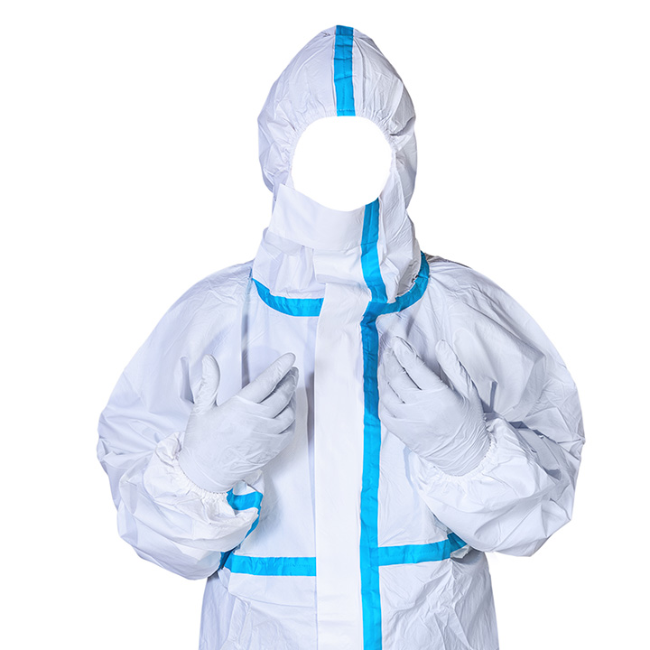
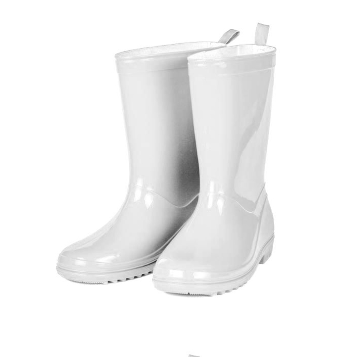
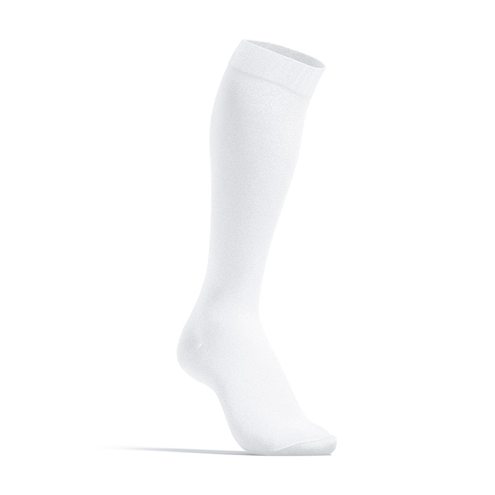
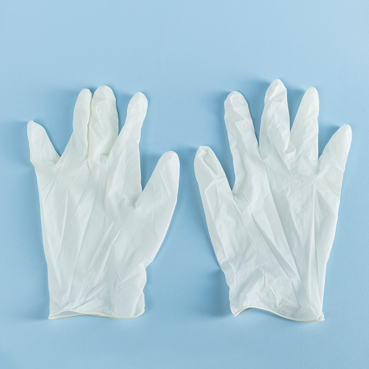
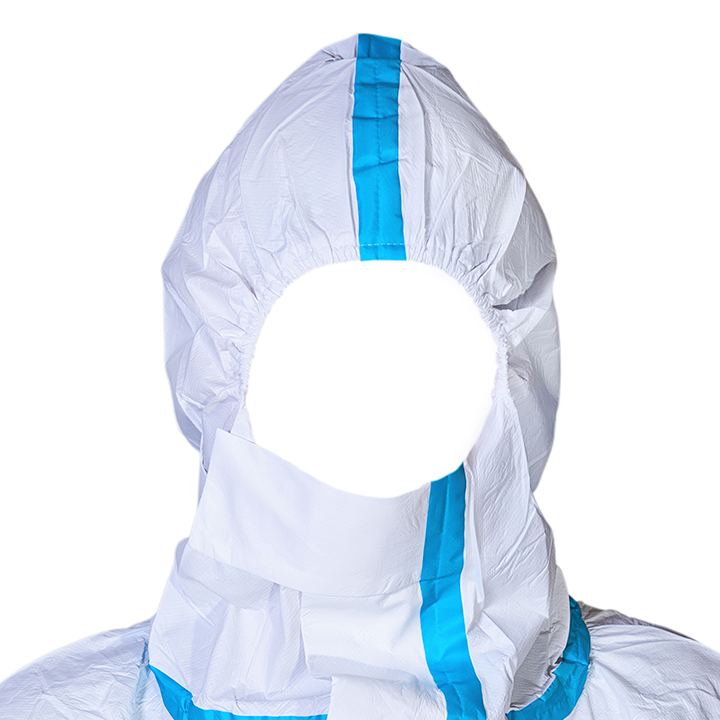
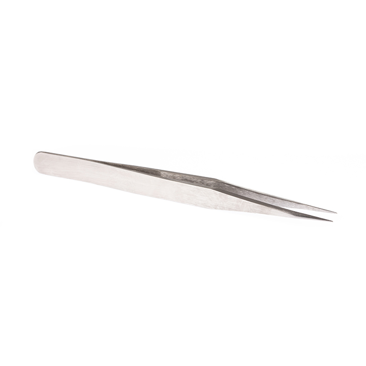
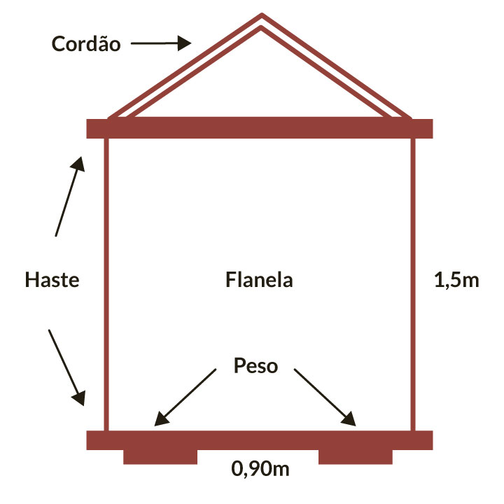

Módulo 3 Prevenção, controle e vigilância em saúde
A vigilância da febre maculosa
Um dos objetivos da vigilância da Febre Maculosa é identificar e investigar os possíveis locais de infecção e recomendar medidas de controle e prevenção.
O controle de carrapatos em animais assim como o uso de carrapaticidas devem ser realizados somente sob a orientação de médicos veterinários, profissionais de saúde pública, agricultura e meio ambiente, considerando a concentração do produto, o melhor período do ano para o seu uso, e acima de tudo, os efeitos prejudiciais e a presença de resistência.
Além de colaborar com a vigilância da febre maculosa no território nacional, a presença do Serviço de Referência para Rickettsioses no Laboratório de Hantaviroses e Rickettsioses do IOC possibilita a integração das atividades voltadas para o desenvolvimento tecnológico de técnicas de diagnóstico, assistência, pesquisa e ensino, com o objetivo de contribuir para a promoção da saúde da população brasileira por meio da vigilância epidemiológica desta zoonose e da geração e difusão de conhecimentos na área.


É importante ressaltar que, durante a investigação de possíveis locais suspeitos, todas as atividades de vigilância de ambientes expõem a equipe de campo à infecção. Sendo assim, é extremamente importante que sejam utilizados os Equipamentos de Proteção Individual (EPI) a seguir:
|  |
Macacão descartável de segurança confeccionado em TNT (não tecido) simples e multicamadas com propriedade de retardamento de penetração de líquidos, composto de vestimenta de proteção integral, tipo macacão, com capuz com punho e tornozelos fechados. |
|  |
Botas de cano alto (preferencialmente brancas) - Solado com resistência a escorregamento. |
|
Meia branca. |
|
|  |
Meião branco (calçadas por cima do macacão). |
|  |
Luvas Descartável (calçadas por cima do macacão) - Luva de segurança para proteção das mãos, confeccionadas em borracha natural (látex), na cor natural (sem adição de pigmentação), com pó absorvível (talco), não estéril, em moldagem ambidestra, anatômica, palma, dedos e dorso lisos, de uso único. |
|
Fit adesiva ou gomada (passar a fita na bota e inverter, dificultando a progressão do carrapato, caso ele tente subir). |
|
|  |
Cabelos presos e utilizar o capuz em caso de vento ou vegetação alta. |
|  |
Pinça anatômica para retirada de carrapato 15cm. |
|  |
Técnica de arrasto com composição courvin
O objetivo do arrasto com composição courvin é capturar formas de vida livre encontradas em pastagens. A técnica original foi empregada em 1966 (Sonenshine, Atwood & Lamb, 1966) e posteriormente por vários autores (Lemos et al., 1997; Oliveira, 2000; Oliveira & Leite, 1997; Sonenshine, Atwood & Lamb, 1966; Souza, 1990). O procedimento consiste na utilização de uma composição courvin com medidas de 1,50 m de comprimento por 0,90 m de largura. Em cada extremidade, acrescenta-se uma barra de ferro transpassada em presilhas pregadas na própria composição courvin, com objetivo de mantê-la aberta e próxima do solo. |